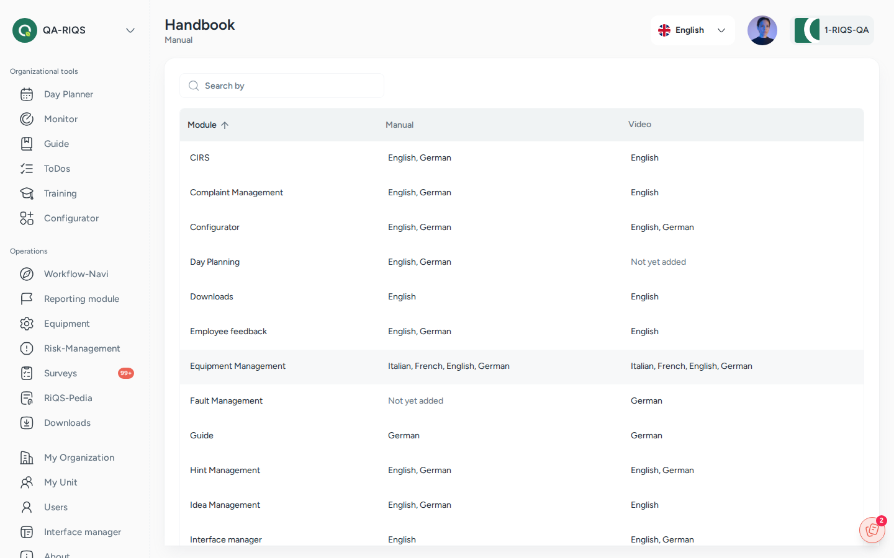

Tutorials, Handbook and About¶
In one sentence: RIQS has built-in help: short videos and a PDF manual for each module, a page where administrators manage that content, and an About page with the version number. Menu: Handbook (managing help content) and About, lower part of the left menu. The help viewer opens from a help button on the module pages. · Status: Live (see Open questions for the start-up introduction)

Handbook: manuals and videos per module and language. Screens show test data.
What it is¶
When users are unsure how a module works, they should not need to leave RIQS or call support. Each module therefore has its own help:
- a video tutorial (one or more short videos), and
- a manual (a PDF document, also called the handbook).
Users open this help on the page they are working on. A help panel opens with the videos and the manual for that module, in English or German.
Administrators manage this content in the Handbook menu. Here they upload, replace and delete videos and manuals for each module and language. This admin page is called the Handbook on screen.
The About page shows which version of RIQS you are using. It also shows the copyright and the provider (SELISE).
Key terms¶
| Term | Meaning |
|---|---|
| Help panel | The panel that opens from the help button on a module page. It shows Video Tutorial and Documentation. |
| Video tutorial | A short video that explains a module. A module can have several videos, each with a title and description. |
| Manual / Handbook | A PDF guide for a module. There is one manual per module and language. |
| Tutorial language | The language of the help content: English (EN) or German (DE). |
Who uses it¶
| Role | What they typically do here |
|---|---|
| RiQS Administrator | Uploads and maintains videos and manuals for all modules in the Handbook menu. |
| Group Administrator | Watches videos and reads manuals. |
| Administrator | Watches videos and reads manuals. May manage content (see Open questions). |
| Power User | Watches videos and reads manuals. |
| Management | Watches videos and reads manuals. |
| Professional | Watches videos and reads manuals. |
How it works¶
Admin uploads video / manual per module and language → users open help on the module page → watch or read
- The help panel knows which module you are in and shows its content.
- In the panel you can switch to the help of another module, change the Tutorial language, open a video in full screen, or open the manual.
- If a module has no content yet, the panel shows the general introduction instead.
Modules with their own help content include:
- Cockpit, Monitoring, Training, Shift Plan, To-Dos, Process Guide, Forms
- Risk Management, Equipment, RiQS-Pedia, Surveys
- Incident reports (CIRS, hints, ideas, employee feedback, complaints, faults)
- Organisations, Units, Users
- Downloads, Interface Manager, RiQS IT
How to …¶
How to open help for a module¶
Who can do this: all roles 1. Go to the module, for example Equipment. 2. Click the help button. 3. Choose Video Tutorial or Documentation. Change the language if needed.
Result: The video plays, or the manual opens.
How to add a video tutorial¶
Who can do this: users who see the Handbook menu (see Open questions) 1. Click Handbook in the left menu. The Handbook overview lists all modules. For each module it shows which languages already have a manual and videos. 2. Open a module and choose the language tab (English or German). 3. Click Add Video Tutorial. Enter a Title (required) and an optional description. Choose the video file. 4. Click Save.
Result: The video is added to the module's playlist for that language. You can edit it later (Edit video) or delete it (Delete video).
How to upload or replace a manual¶
Who can do this: users who see the Handbook menu 1. Open the module in Handbook and choose the language tab. 2. Click Add Manual (or Re-upload Manual if one exists). Choose a PDF file. 3. Click Save.
Result: The manual is available in the help panel. A re-upload replaces the old manual. Delete manual removes it.
How to see the RIQS version¶
Who can do this: all roles 1. Click About in the left menu.
Result: You see the version number, the copyright and "Technology & Design by SELISE digital platforms".
Rules to know¶
- Manuals: PDF only, maximum 10 MB. One manual per module and language. Uploading again replaces it.
- Videos: MP4, 3GP, AVI, WEBM, GIF or MPEG-4, maximum 500 MB each. A module can have several videos per language. Each video needs a title.
- Languages: help content exists in English and German.
- About is always visible to every user, whatever their role.
- The help panel's language choice only changes the help content, not the language of RIQS.
Who can do what¶
| Action | RiQS Administrator | Group Administrator | Administrator | Power User | Management | Professional |
|---|---|---|---|---|---|---|
| Open help (videos, manual) on module pages | ✅ | ✅ | ✅ | ✅ | ✅ | ✅ |
| Open About | ✅ | ✅ | ✅ | ✅ | ✅ | ✅ |
| Open the Handbook menu | ✅ | open question | open question | open question | ❌ | ❌ |
| Add, edit, delete videos | ✅ | open question | open question | open question | ❌ | ❌ |
| Upload, replace, delete manuals | ✅ | open question | open question | open question | ❌ | ❌ |
Connected modules¶
- Every module page can open its help content.
- Interface Manager, RiQS IT and Reports and downloads have their own help content.
Open questions¶
- Who manages help content? The roles & rights sheets do not cover the Handbook menu. Which roles should manage videos and manuals (RiQS Administrator only, or also Group Administrator, Administrator or Power User)? Can customers upload their own content, or does it apply to all customers?
- Start-up introduction. The previous app showed an introduction tutorial after login, which users could hide. The new app does not show it yet. Is it still wanted?
- Other languages. Help content exists only in English and German. Are French, Italian or other languages planned?
Last reviewed: 2026-10-26